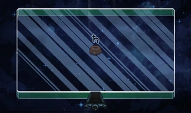
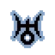
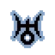

В The binding of Isaac есть множество крутых комнат.
Но больше всего мне понравился Планетарий.

Планетарий был добавлен в DLC Repentance.
Он представляет собой стеклянное помещение
на фоне которого течет космический фон.
Комнаты в Isaac
Так как же попасть в Планетарий и зачем он нужен.
Чтобы попасть в Планетарий нужно за забег
собрать 3 предмета из списка. С ним можно
ознакомиться здесь.
В Планетарии вы найдете
вещи связанные с космосом. Всего таких вещей 11.


у этих вещей есть много полезных свойств. Ради вещей и красоты Планетария туда стоит сходить.
В Планетарии вы найдете
вещи связанные с космосом. Всего таких вещей 11.

у этих вещей есть много полезных свойств. Ради вещей и красоты Планетария туда стоит сходить.